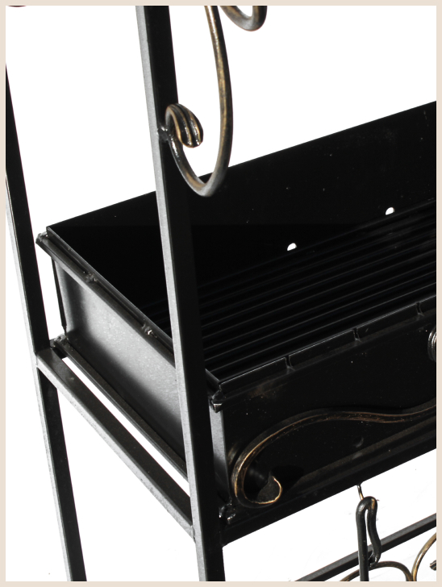

<section class="page__best best">
    <div class="best__container _container">
        <div class="best__body">
            <div class="best__content">
                <h3 class="best__chapter chapter">Почему у нас лучшие мангалы?</h3>
                <h2 class="best__title _icons-title title">Покраска специальным жаростойким составом</h2>
                <div class="best__text text">Метод получения полимерных покрытий с высокими защитными и декоративными свойствами, что позволяет нашим изделиям иметь:</div>
            </div>
            <div class="best__because">
                <ul class="best__items">
                    <li class="best__item _icons-fire"><span>Прочность и антикоррозийные свойства</span></li>
                    <li class="best__item _icons-fire"><span>Увеличивает срок службы и эксплуатации обработанного изделия</span></li>
                    <li class="best__item _icons-fire">
                        <span
                            >Стойкость к разному рода воздействий окружающей среды: влажности, химикатов, ультрафиолетового света, атмосферного давления и других экстремальных
                            погодных условий.</span
                        >
                    </li>
                    <li class="best__item _icons-fire"><span>Такое покрытие снижает риск царапин, осколков, трения, коррозии и прочих проблем эксплуатации</span></li>
                </ul>
                <div class="best__img">
                    
                </div>
            </div>
        </div>
    </div>
</section>
